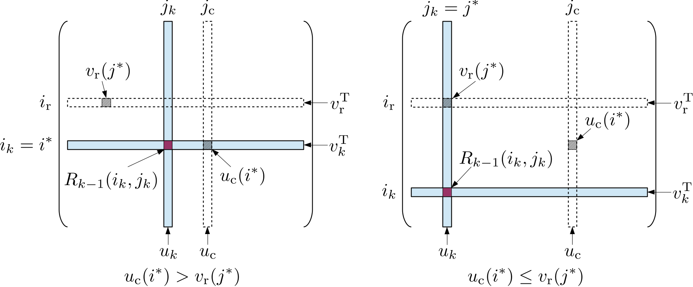
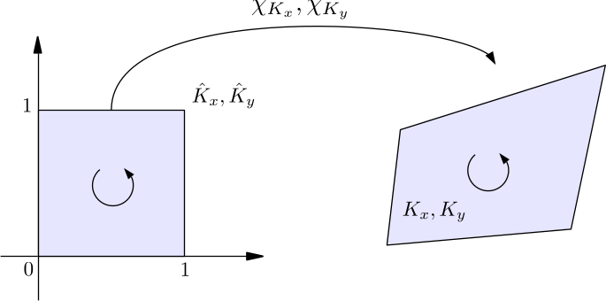
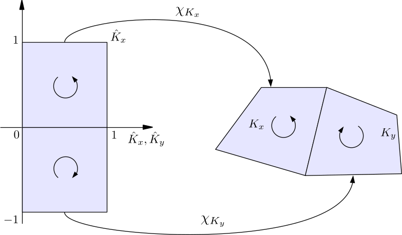
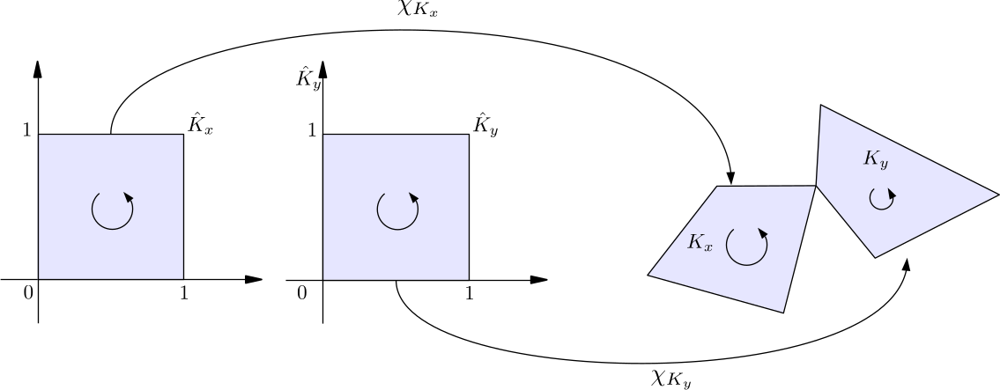
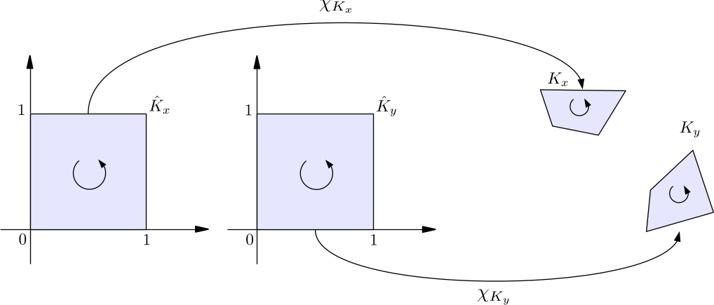
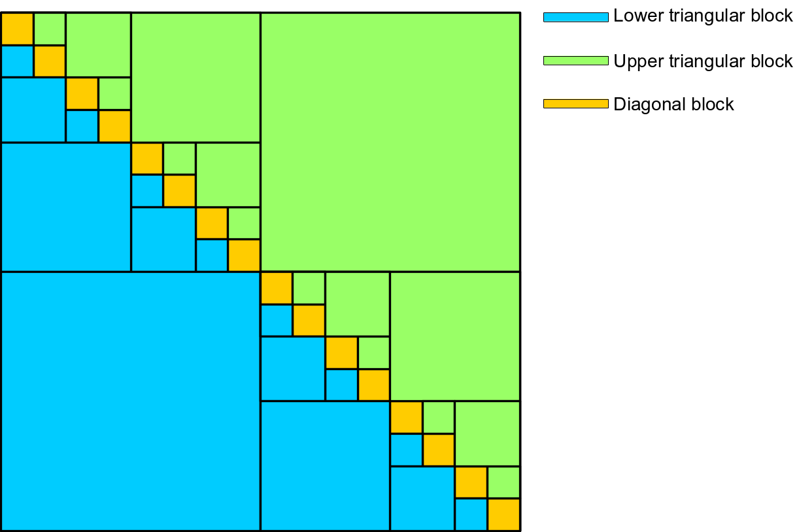
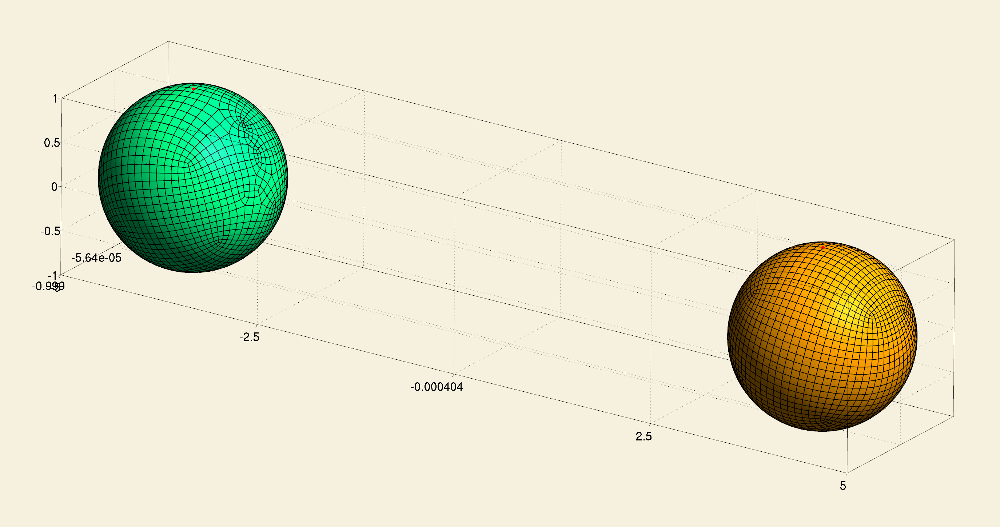
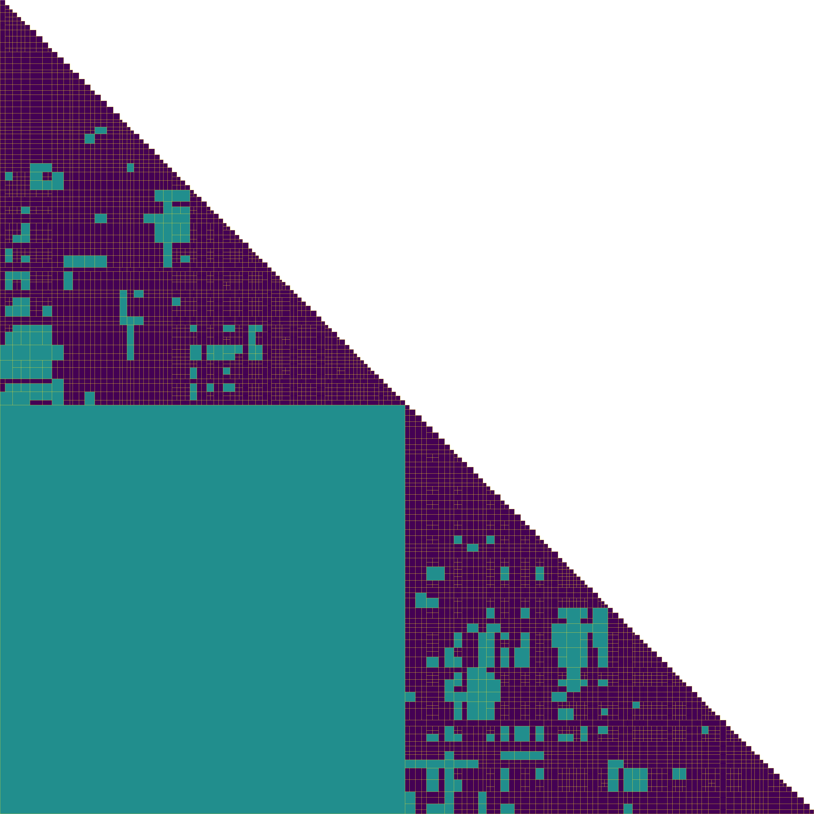
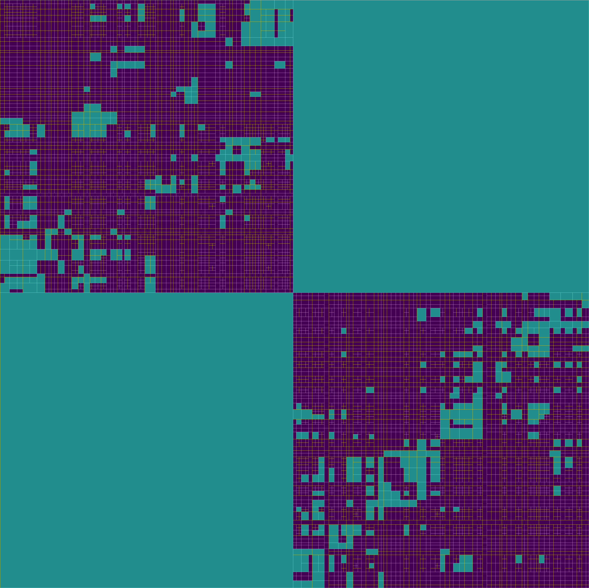

Build an \(\mathcal{H}\)-matrix
In our previous example, a block cluster tree \(T(I\times J)\) is created for a bilinear form \(b_A: X\times Y' \rightarrow \mathbb{R}\). This bilinear form is associated with the boundary integral operator \(A: X \rightarrow Y\). \(I\) is the index set for the finite dimensional subspace \(X_h\) of \(X\) and \(J\) is the index set for the finite dimensional subspace \(Y_h'\) of \(Y'\). The leaf nodes of the block cluster tree \(T(I\times J)\) forms a partition of the complete block index set \(I\times J\), which defines the block structure of the \(\mathcal{H}\)-matrix to be built.
For a node \(b=\tau\times\sigma\) in the leaf set of \(T(I\times J)\), when the cardinality of \(\tau\) or \(\sigma\) is small enough, \(\tau\times\sigma\) is a near field leaf node; otherwise, \(\tau\times\sigma\) satisfies the \(\eta\)-admissibility condition and is a far field leaf node. A near field leaf node means the two groups of DoFs in \(\tau\) and \(\sigma\) have strong interaction, so the corresponding leaf node of the \(\mathcal{H}\)-matrix should be a full matrix. Assembling a full matrix is simply computing all the entries, which does not need any special treatment. A far field leaf node means DoF interaction is weak and the corresponding leaf node of the \(\mathcal{H}\)-matrix possesses data sparsity, hence a low rank representation of the matrix block should be adopted.
Definition of low rank matrices
A low rank representation of a matrix \(M\in \mathbb{R}^{I\times J}\) is a factorization
\[\begin{equation} M = AB^{\mathrm{T}} \quad A\in \mathbb{R}^{I\times k}, B\in \mathbb{R}^{J\times k}, k\in \mathbb{N}_0, \end{equation}\]where \(k\) is the rank of \(M\). Let the columns of \(A\) be \(\{ a_i \}_{i=1}^k\) and the columns of \(B\) be \(\{ b_i \}_{i=1}^k\). The above factorization is actually a sum of outer products of the column vectors in \(A\) and \(B\)
\[\begin{equation} M = \sum_{i=1}^k a_i b_i^{\mathrm{T}}. \end{equation}\]If \(k\) is less than the actual rank of \(M\), the above factorization is approximate.
If \(\lvert I \rvert = m\) and \(\lvert J \rvert = n\), the storage of \(M\) as a full matrix is \(mn\). When \(M\) is factorized as a rank-\(k\) matrix, its storage is \(k(m+n)\). When the rank of \(M\) is small, i.e. \(k\ll \min\{m, n\}\), or we choose a rank smaller than the actually rank of \(M\), i.e. \(k\ll \rank(M)\), the low rank representation consumes much less memory than the full matrix format.
Low rank matrix constructed from separable degenerate kernel
Let the boundary integral operator \(A: X \rightarrow Y\) be defined as
\[\begin{equation} (Au(y))(x) = \int_{\Gamma} \kappa(x,y) u(y) \intd s_y, \quad u\in X, \end{equation}\]where \(\kappa(x,y)\) is its kernel function. The bilinear form \(b_A: X\times Y' \rightarrow \mathbb{R}\) induced from \(A\) is
\[\begin{equation} b_A(u,w) = \langle Au,w \rangle = \int_{\Gamma} w(x) \int_{\Gamma} \kappa(x,y) u(y) \intd s_y \intd s_x, \quad w\in Y'. \end{equation}\]Let \(\{ \psi_i \}_{i=1}^M\) be a basis of \(Y_h'\) and \(\{ \varphi_j \}_{j=1}^N\) be a basis of \(X_h\). Then \(b_A\) can be discretized into a matrix \(\mathcal{A}\), whose entries can be computed as:
\[\begin{equation} \mathcal{A}_{ij} = \int_{\Gamma} \psi_i(x) \int_{\Gamma} \kappa(x,y) \varphi_j(y) \intd s_y \intd s_x. \end{equation}\]For a far field leaf block cluster \(b=\tau\times\sigma\) in \(T(I\times J)\), the effective integration domain of \(b_A\) is restricted to \(\supp(\tau)\times\supp(\sigma)\), because the basis functions have compact support. From now on, we use \(P\) to represent \(\supp(\tau)\) and use \(Q\) to represent \(\supp(\sigma)\). Hence,
\[\begin{equation} b_A(u\vert_Q, w\vert_P) = \int_P w(x) \int_Q \kappa(x,y) u(y) \intd s_y \intd s_x. \end{equation}\]If \(\tau = \{ i_1,\cdots,i_m \}\) and \(\sigma = \{ j_1,\cdots,j_n \}\) (when the internal DoF numbering is adopted, \(\{ i_1,\cdots,i_m \}\) and \(\{ j_1,\cdots,j_n \}\) are continuous DoF index ranges), the discretization of this restricted bilinear form produces a matrix block \(\mathcal{A}\big\vert_b\), whose entries can be computed as:
\[\begin{equation} \left(\mathcal{A} \big\vert_b\right)_{rs} = \int_P \psi_{i_r}(x) \int_Q \kappa(x,y) \varphi_{j_s}(y) \intd s_y \intd s_x, \end{equation}\]where \(r=1,\cdots,m\) and \(s=1,\cdots,n\).
To construct a low rank matrix approximation for this matrix block \(\mathcal{A}\big\vert_b\), we need to find a separable expansion of the kernel function \(\kappa(x,y)\) according to the following ansatz
\[\begin{equation} \kappa(x,y) \approx \kappa^{(k)}(x,y) = \sum_{\nu=1}^k \alpha_{\nu}^{(k)}(x) \beta_{\nu}^{(k)}(y), \quad x\in P, y\in Q. \end{equation}\]\(\kappa^{(k)}(x,y)\) with a finite number of terms in the sum is called a degenerate kernel and \(k\) is its separation rank. Then the entry \(\left( \mathcal{A}\big\vert_b \right)_{rs}\) can be approximated as
\[\begin{equation} \begin{aligned} \left(\mathcal{A} \big\vert_b\right)_{rs} & \approx \int_P \psi_{i_r}(x) \int_Q \sum_{\nu=1}^k \alpha_{\nu}^{(k)}(x) \beta_{\nu}^{(k)}(y) \varphi_{j_s}(y) \intd s_y \intd s_x \\ &= \sum_{\nu=1}^k \left( \int_P \alpha_{\nu}^{(k)}(x) \psi_{i_r}(x) \intd s_x \right) \cdot \left( \int_Q \beta_{\nu}^{(k)}(y) \varphi_{j_s}(y) \intd s_y \right) \\ &= \sum_{\nu=1}^k a_{i_r\nu} b_{j_s\nu}. \end{aligned} \end{equation}\]We can see that the original double integral is separated into two independent integrals with respect to coordinate variables \(x\) and \(y\). The matrix block \(\mathcal{A}\big\vert_b\) can be approximated by a low rank matrix
\[\begin{equation} \mathcal{A}\big\vert_b \approx \mathcal{A}^{(k)}\big\vert_b = [\alpha] [\beta]^{\mathrm{T}}, \end{equation}\]where \([\alpha]\in \mathbb{R}^{m\times k}\), \([\beta]\in \mathbb{R}^{n\times k}\),
\[\begin{equation} [\alpha] = \begin{pmatrix} a_{i_11} & \cdots & a_{i_1k} \\ \vdots & & \vdots \\ a_{i_m1} & \cdots & a_{i_mk} \end{pmatrix}, [\beta] = \begin{pmatrix} b_{j_11} & \cdots & b_{j_1k} \\ \vdots & & \vdots \\ b_{j_n1} & \cdots & b_{j_nk} \end{pmatrix}. \end{equation}\]It can be envisioned that if the degenerate kernel \(\kappa^{(k)}(x,y)\) is a good approximation of the original kernel \(\kappa(x,y)\), the matrix block \(\mathcal{A}\big\vert_b\) can also be well approximated by the low rank matrix \(\mathcal{A}^{(k)}\big\vert_b\). The degenerate kernel is usually obtained by applying Taylor expansion or interpolation (such as Lagrange interpolation) to \(\kappa(x,y)\), with respect to variable \(x\) or \(y\). It can be proved that the residual norm between \(\kappa(x,y)\) and \(\kappa^{(k)}(x,y)\) is exponentially convergent with respect to the separation rank \(k\), if two conditions are satisfied:
- the original kernel \(\kappa(x,y)\) is asymptotically smooth and
- the two clusters \(\tau\) and \(\sigma\) are \(\eta\)-admissible.
The condition of asymptotically smooth is that for all \(x\in P\), \(y\in Q\), \(x\neq y\),
\[\begin{equation} \lvert \partial_x^{\alpha} \partial_y^{\beta} \kappa(x,y) \rvert \leq c_{\mathrm{as}}(\alpha+\beta)\lvert x-y \rvert^{-\lvert \alpha \rvert - \lvert \beta \rvert - s}, \end{equation}\]where \(\alpha,\beta\in \mathbb{N}_0^d\), \(\alpha+\beta\neq 0\), \(s\in \mathbb{R}\) and
\[\begin{equation} c_{\mathrm{as}}(\nu) = C\nu! \lvert \nu \rvert^{\rho} \gamma^{\lvert \nu \rvert}, \quad v\in \mathbb{N}_0^d. \end{equation}\]The condition of exponential convergence is
\[\begin{equation} \lVert \kappa - \kappa^{(k)} \rVert_{\infty,P\times Q} \leq c_1 \exp(-c_2 k^{\alpha}), \end{equation}\]where \(c_1\geq 0\), \(c_2 > 0\) and \(\alpha > 0\). If we let \(c_2 = -\log(c_2'\eta)\), \(\alpha=\frac{1}{d}\) and \(k = m^d\), the above condition can be transformed to
\[\begin{equation} \lVert \kappa - \kappa^{(k)} \rVert_{\infty,P\times Q} \leq c_1 (c_2'\eta)^m. \end{equation}\]This convergence condition depends on the admissibility constant \(\eta\) and \(m\). \(m-1\) is the highest polynomial degree in the Taylor expansion or interpolation. \(k\) is the number of terms in the polynomial.
Let \(A_{PQ}\) be the boundary integral operator with the kernel \(\kappa(x,y)\), which is restricted to the domain \(P\times Q\) and \(A_{PQ}^{(k)}\) be the boundary integral operator on \(P\times Q\) with the degenerate kernel \(\kappa^{(k)}\). To measure the error between \(A_{PQ}\) and \(A_{PQ}^{(k)}\), we adopt the Hilbert-Schmidt norm \(\lVert \cdot \rVert_{\mathrm{F}}\):
\[\begin{equation} \lVert A_{PQ} - A_{PQ}^{(k)} \rVert_{\mathrm{F}} := \sqrt{\int_P \int_Q \lvert \kappa(x,y) - \kappa^{(k)}(x,y) \rvert^2 \intd s_y \intd s_x}. \end{equation}\]Obviously, it is equal to the \(L^2\)-norm of the kernel function’s error:
\[\begin{equation} \lVert A_{PQ} - A_{PQ}^{(k)} \rVert_{\mathrm{F}} = \lVert \kappa - \kappa^{(k)} \rVert_{L^2(P\times Q)}. \end{equation}\]The error between the two boundary integral operators also has an exponential convergence because the \(L^2\)-norm of the kernel function’s error can be controlled by its \(L^{\infty}\)-norm, i.e.
\[\begin{equation} \begin{aligned} \lVert A_{PQ} - A_{PQ}^{(k)} \rVert_{\mathrm{F}} &= \sqrt{\int_P \int_Q \lvert \kappa(x,y) - \kappa^{(k)}(x,y) \rvert^2 \intd s_y \intd s_x} \\ &\leq \sqrt{\int_P \int_Q \lVert \kappa(x,y) - \kappa^{(k)}(x,y) \rVert_{\infty,P\times Q}^2 \intd s_y \intd s_x} \\ &= \lVert \kappa - \kappa^{(k)} \rVert_{\infty,P\times Q} \sqrt{\mathrm{vol}(P) \mathrm{vol}(Q)} \\ &\leq \tilde{c}_1(c_2'\eta)^m, \end{aligned} \end{equation}\]where \(\mathrm{vol}(P)\) and \(\mathrm{vol}(Q)\) are the volumes of \(P\) and \(Q\).
To estimate the error between matrix blocks \(\mathcal{A}\big\vert_b\) and \(\mathcal{A}^{(k)}\big\vert_b\), we define a prolongation operator \(P_{\sigma}: \mathbb{R}^n \rightarrow L^2(Q)\) with respect to the cluster \(\sigma\), which restores a vector \(z\) of coefficients \(\{ z \}_{i=1}^n\) to a function as
\[\begin{equation} P_{\sigma} z = \sum_{s=1}^n z_s \varphi_{j_s}(y). \end{equation}\]We further define a restriction operator \(R_{\tau}: L^2(P) \rightarrow \mathbb{R}^m\) with respect to the cluster \(\tau\), which projects the output function \(f\) of the boundary integral operator \(A: X \rightarrow Y\) limited on the block cluster \(b\), i.e. \(A_{PQ}\), to the basis functions \(\{ \psi_{i_r} \}_{r=1}^m\) whose supports are within the cluster \(\tau\). This produces a vector in \(\mathbb{R}^m\) and its \(r\)-th entry is
\[\begin{equation} (R_{\tau} f)_r = \int_P f(x) \psi_{i_r}(x) \intd s_x. \end{equation}\]Then the matrix block on the block cluster \(b\) associated with the bilinear form \(b_A\) is
\[\begin{equation} \mathcal{A}\big\vert_b = R_{\tau} A_{PQ} P_{\sigma}. \end{equation}\]Finally, an error estimate of the low rank matrix is
\[\begin{equation} \begin{aligned} \lVert \mathcal{A}\big\vert_b - \mathcal{A}^{(k)}\big\vert_b \rVert_2 &\leq \lVert R_{\tau} \rVert_2 \lVert P_{\sigma} \rVert_2 \lVert A_{PQ} - A_{PQ}^{(k)} \rVert_{L^2(P) \leftarrow L^2(Q)} \\ &\leq \lVert R_{\tau} \rVert_2 \lVert P_{\sigma} \rVert_2 \lVert A_{PQ} - A_{PQ}^{(k)} \rVert_{\mathrm{F}} \\ &\leq \lVert R_{\tau} \rVert_2 \lVert P_{\sigma} \rVert_2 \tilde{c}_1 (c_2'\eta)^m, \end{aligned} \end{equation}\]where \(\lVert \cdot \rVert_{L^2(P) \leftarrow L^2(Q)}\) is the operator norm of an boundary integral operator, which is not larger than the Hilbert-Schmidt norm \(\lVert \cdot \rVert_{\mathrm{F}}\).
The above theory shows that the error of low rank matrix block can be controlled by the admissibility constant \(\eta\) and the highest polynomial degree \(m-1\) of the Taylor expansion or interpolation of the kernel function \(\kappa(x,y)\). Taylor expansion and interpolation are two methods for constructing a separable degenerate kernel \(\kappa^{(k)}\). The formal rank \(k\) of the low rank matrix, i.e. the number of columns in either component matrix \([\alpha]\) or \([\beta]\), is equal to the number of terms in the degenerate kernel \(\kappa^{(k)}\).
Low rank matrix constructed from adaptive cross approximation (ACA)
A disadvantage of the Taylor expansion or interpolation technique for constructing low rank matrices is that the separable kernel expansion is problem dependent, which makes a BEM software library not universal. In HierBEM, we use the heuristic adaptive cross approximation (ACA) method to construct low rank matrices so kernel expansion can be avoided.
Basic idea of ACA
ACA is an iterative method, which approximates the original data-sparse matrix block \(\mathcal{A}\big\vert_b\in \mathbb{R}^{m\times n}\) by incrementally selecting only a few crosses from it. A cross comprises a row vector and a column vector in \(\mathcal{A}\big\vert_b\).
At the beginning of the ACA procedure, an approximant matrix \(S_0\in \mathbb{R}^{m\times n}\) is initialized to zero and a remainder matrix \(R_0\in \mathbb{R}^{m\times n}\) is set as the original \(\mathcal{A}\big\vert_b\). In each iteration step \(k \geq 1\), a selected cross in \(\mathcal{A}\big\vert_b\) contains a row vector \(v_k^{\mathrm{T}}\) and a column vector \(u_k\). Their row and column indices are \(i_k\) and \(j_k\) respectively. According to the following pseudocode, this cross is transformed to a same cross in the remainder matrix of the previous step \(R_{k-1}\). Meanwhile, the row vector \(v_k^{\mathrm{T}}\) is divided by the entry \(R_{k-1}(i_k,j_k)=u_k(i_k)=v_k(j_k)\), which is just the crossing point of \(u_k\) and \(v_k^{\mathrm{T}}\).
for l = 1:k-1 do
uk = uk - ul * vl(jk)
vk = vk - ul(ik) * vl
endfor
vk = vk / vk(jk)
The outer product \(u_kv_k^{\mathrm{T}}\) is added into the approximant matrix \(S_{k-1}\in \mathbb{R}^{m\times n}\) and removed from the remainder matrix \(R_{k-1}\in \mathbb{R}^{m\times n}\) in the previous step, which produces \(S_k\) and \(R_k\). Due to the above construction of \(u_k\) and \(v_k\), the same cross in \(R_k\) will be eliminated and the error between \(S_k\) and \(\mathcal{A}\big\vert_b\) becomes smaller than that in the previous step. The iteration formulas are as below.
\[\begin{equation} \begin{aligned} S_0 &= 0 \\ S_{k} &= S_{k-1}+(R_{k-1})_{i_k j_k}^{-1}(R_{k-1})_{1:m,j_k}(R_{k-1})_{i_k,1:n} = S_{k-1} + u_kv_k^T \\ R_0 &= \mathcal{A}\big\vert_b \\ R_{k} &= R_{k-1}-(R_{k-1})_{i_k j_k}^{-1}(R_{k-1})_{1:m,j_k}(R_{k-1})_{i_k,1:n} = R_{k-1}-u_kv_k^T, \end{aligned} \end{equation}\]When \(k=r\) and the norm of the remainder matrix \(R_r\) is small enough, ACA exits and \(S_r\) is a low rank representation of \(\mathcal{A}\big\vert_b\), which is a sum of outer products of the columns \(\{ u_i \}_{i=1}^r\) and rows \(\{ v_i^{\mathrm{T}} \}_{i=1}^r\):
\[\begin{equation} \mathcal{A}\big\vert_b \approx \sum_{i=1}^r u_i v_i^{\mathrm{T}}. \end{equation}\]The formal rank \(r\) of this low rank matrix is just the number of ACA iterations.
N.B. \(S_k\) and \(R_k\) in the above algorithm are only used for the theoretical explanation of ACA. They do not appear in the actual implementation.
Select crosses in ACA
In ACA, a cross is not directly selected from \(\mathcal{A}\big\vert_b\), but should be based on a reference row \(v_{\mathrm{r}}^{\mathrm{T}}\) and a reference column \(u_{\mathrm{c}}\), which are randomly selected from rows and columns in \(\mathcal{A}\big\vert_b\) that have not been selected in previous ACA steps. Next, we find the entry \(v_{\mathrm{r}}(j^{\ast})\) having the maximum absolute value in \(v_{\mathrm{r}}^{\mathrm{T}}\) with \(j^{\ast}\) being its column index and find the entry \(u_{\mathrm{c}}(i^{\ast})\) having the maximum absolute value in the reference column \(u_{\mathrm{c}}\) with \(i^{\ast}\) being its row index.
When \(u_{\mathrm{c}}(i^{\ast}) > v_{\mathrm{r}}(j^{\ast})\), we select the \(i_k\)-th row in the cross from the remainder matrix \(R_{k-1}\) as the row vector \(v_k^{\mathrm{T}}\) for the \(k\)-th ACA step. Assume \(R_{k-1}(i_k,j_k)\) to be the entry having the maximum value in \(v_k\), then we select the \(j_k\)-th column in the remainder matrix \(R_{k-1}\) as the column vector \(u_k\) in the cross for the \(k\)-th step.
When \(u_{\mathrm{c}}(i^{\ast}) \leq v_{\mathrm{r}}(j^{\ast})\), we select the \(j_k\)-th column in the cross from the remainder matrix \(R_{k-1}\) as the column vector \(u_k\) for the \(k\)-th ACA step. Let \(R_{k-1}(i_k,j_k)\) be the entry having the maximum value in the column \(u_k\), then we select the \(i_k\)-th row in the remainder matrix \(R_{k-1}\) as the row vector \(v_k^{\mathrm{T}}\) in the cross for the \(k\)-th step.
The above procedure is illustrated in the following figure.

\(\mathcal{H}\)-matrix construction
An \(\mathcal{H}\)-matrix representation of the Galerkin matrix \(\mathcal{A}\) for the bilinear form \(b_A\) has the same hierarchical structure as the block cluster tree \(T(I\times J)\). For a matrix block \(\mathcal{A}\big\vert_b\) within \(\mathcal{A}\) which is associated with the block cluster \(b=\tau\times\sigma\) in \(T(I\times J)\), there are three cases.
- \(b\) is a non-leaf node of \(T(I\times J)\): the \(\mathcal{H}\)-matrix node for this block cluster only contains pointers to its child nodes without any actually data.
- \(b\) is a near field leaf node of \(T(I\times J)\): the corresponding \(\mathcal{H}\)-matrix node has no children and contains a pointer to a full matrix. All entries of this full matrix should be computed.
- \(b\) is a far field leaf node of \(T(I\times J)\): the corresponding \(\mathcal{H}\)-matrix node has no children and contains a pointer to a low rank matrix. The low rank matrix is constructed using ACA. During the ACA procedure, only a few rows and columns in \(\mathcal{A}\big\vert_b\) are computed.
In case 2 and case 3, matrix entries corresponding to pairs of internal DoF indices need evaluation. The procedure for computing these matrix entries in HierBEM is different from the cell based iteration used for assembling a matrix in FEM. The reason is given below.
We have been familiar with matrix assembly in FEM, where the integral involving a test function and a trial function is a single integral. This enables us to loop over all cells in the triangulation, compute cell local values, then assemble them into the global matrix according to DoF indices in the cell.
In Galerkin BEM, we need to handle double integrals related to boundary integral operators. Even though the support of a basis function in the test space does not overlap with the support of a basis function in the trial space, because of the long-range kernel of the boundary integral operator, the double integral still has a non-zero value. At first glance, it seems a double loop is needed to compute such an integral, i.e. the outer loop iterates over DoFs in a target cell \(K_x\) with respect to the variable \(x\) and the inner loop iterates over DoFs in a source cell \(K_y\) with respect to the variable \(y\). However, after obtaining a local matrix for all pairs of DoFs in \(K_x\) and \(K_y\), it is difficult to determine into which leaf node in the \(\mathcal{H}\)-matrix and at which local row and column indices of this leaf node we should assemble this local matrix. Furthermore, the ACA procedure for assembling a far field \(\mathcal{H}\)-matrix leaf node involves random selection of rows and columns, which cannot be implemented using the above deterministic pair-cell based double loop.
Therefore, the assembly of an \(\mathcal{H}\)-matrix in HierBEM is based on iteration over pairs of DoFs. For a near field leaf node \(b=\tau\times\sigma\), we use a double loop by iterating over DoFs in the cluster \(\tau\) (outer loop) and over DoFs in the cluster \(\sigma\) (inner loop). For a far field leaf node, when a row vector needs evaluation, we use a single loop iterating over DoFs in the cluster \(\sigma\); when a column vector needs evaluation, we use a single loop iterating over DoFs in the cluster \(\tau\).
Considering the fact that deal.ii relies on cell iterators to acquire basis function related values and a DoF may be shared by several cells (e.g. when a continuous Lagrange finite element FE_Q is adopted), we need to explicitly know to which cells a DoF belongs. In HierBEM, the class DoFToCellTopology holds this information.
Explanation of example code
The example code for building an \(\mathcal{H}\)-matrix is in hierbem/examples/build-hmatrix/build-hmatrix.cu. Because numerical quadrature (Sauter quadrature) for computing matrix entries runs on GPU, the extension of the file name is cu.
In this file, the classes ClusterTreeBuilder is the same as that defined in hierbem/examples/build-block-cluster-tree/build-block-cluster-tree.cc.
In the class BEMFunctionSpace, we add two more private data members cell_iterators and dof_to_cell_topo. cell_iterators is a list of cell iterators in the DoF handler associated with the BEM function space. dof_to_cell_topo holds the information about to which cells each DoF belongs.
std::vector<typename DoFHandler<dim, spacedim>::cell_iterator> cell_iterators;
DoFToCellTopology<dim, spacedim> dof_to_cell_topo;
A new private function build_dof_to_cell_topology is responsible for enumerating cell iterators and building the DoF-to-cell topology.
template <int dim, int spacedim>
void
BEMFunctionSpace<dim, spacedim>::build_dof_to_cell_topology()
{
cell_iterators.reserve(dof_handler->get_triangulation().n_active_cells());
for (const auto &cell : dof_handler->active_cell_iterators())
cell_iterators.push_back(cell);
DoFToolsExt::build_dof_to_cell_topology(dof_to_cell_topo,
cell_iterators,
*dof_handler);
}
Moreover, a getter function get_dof_handler is provided, which will be used by BEMBilinearForm.
The class BEMBilinearForm has five template arguments as below.
template <int dim,
int spacedim,
template <int, typename>
typename KernelFunctionType,
typename RangeNumberType = double,
typename KernelNumberType = double>
class BEMBilinearForm
{
// ...
private:
KernelFunctionType<spacedim, DeviceNumberType<KernelNumberType>> kernel;
const BEMFunctionSpace<dim, spacedim> &trial_space;
const BEMFunctionSpace<dim, spacedim> &test_space;
bool is_symmetric;
std::unique_ptr<BlockClusterTree<spacedim>> block_cluster_tree;
};
The meaning of these template arguments:
dimis the manifold dimension.spacedimis the space dimension into which the manifold is embedded.KernelFunctionTypeis the type of the kernel function \(\kappa(x,y)\), which should also be a template type. Its first template argument is the space dimension of the coordinate variable \(x\) or \(y\). The second template argument is the type of the return value of \(\kappa(x,y)\).RangeNumberTypeis the number type used by the \(\mathcal{H}\)-matrix.KernelNumberTypeis the number type of the kernel function.
It is possible that RangeNumberType and KernelNumberType are different. For example, in a complex valued Laplace problem, the boundary condition vector and the solution vector are complex valued containing the information of both amplitude and phase. Because HierBEM uses LAPACK for full matrix algebra, different number types for vectors and matrices are now allowed in a same function call. Hence, system matrices in the complex valued Laplace problem should also be complex valued. However, kernel functions are still real valued. Therefore, we need two template arguments to separately specify the number types for kernel functions (KernelNumberType) and matrices or vectors (RangeNumberType).
The private member kernel of BEMBilinearForm is the kernel function. Its first template argument is the variable dimension and the second argument DeviceNumberType<KernelNumberType> is a template alias type dependent on the kernel function value type KernelNumberType. DeviceNumberType is defined as
template <typename HostNumberType>
using DeviceNumberType = std::conditional_t<
std::is_floating_point_v<HostNumberType>,
HostNumberType,
complex<typename numbers::NumberTraits<HostNumberType>::real_type>>;
When KernelNumberType is a real valued type, such as float or double, DeviceNumberType is the same as KernelNumberType. When KernelNumberType is a complex valued type, such as std::complex<float> or std::complex<double>, DeviceNumberType uses our own complex type HierBEM::complex instead of std::complex. This is because CUDA at the moment does not support std::complex.
The Boolean member is_symmetric of BEMBilinearForm indicates the symmetry of the bilinear form. A bilinear form is symmetric when the kernel function is symmetric, i.e. \(\kappa(x,y) == \kappa(y,x)\), and the trial space and trial space is a same space.
We also add two new member functions build_hmatrix and build_hmatrix_with_mass_matrix for \(\mathcal{H}\)-matrix construction. The former is used to build an \(\mathcal{H}\)-matrix for a bilinear form depending on a boundary integral operator only, such as the single layer potential operator \(V\). The latter is used to build an \(\mathcal{H}\)-matrix for a bilinear form depending on a boundary integral operator plus a scaled identity operator, such as \(\frac{1}{2}I+K\) with \(K\) being the double layer potential operator. \(\frac{1}{2}I+K\) appears in the right hand side term \((\frac{1}{2}I+K)g\) of the Laplace equation with the Dirichlet boundary condition \(g\).
The definition of the function build_hmatrix is given below.
template <int dim,
int spacedim,
template <int, typename> typename KernelFunctionType,
typename RangeNumberType,
typename KernelNumberType>
std::unique_ptr<HMatrix<spacedim, RangeNumberType>>
BEMBilinearForm<dim,
spacedim,
KernelFunctionType,
RangeNumberType,
KernelNumberType>::
build_hmatrix(const unsigned int thread_num,
const unsigned int max_rank,
const double epsilon,
const DeviceNumberType<KernelNumberType> kernel_factor,
const SauterQuadratureRule<dim> &sauter_quad_rule,
const std::vector<MappingInfo<dim, spacedim> *> &mappings,
const std::map<types::material_id, unsigned int>
&material_id_to_mapping_index,
SubdomainTopology<dim, spacedim> &subdomain_topology)
{
HMatrixSupport::Property property = is_symmetric ?
HMatrixSupport::Property::symmetric :
HMatrixSupport::Property::general;
HMatrixSupport::BlockType block_type =
HMatrixSupport::BlockType::diagonal_block;
auto hmat = std::make_unique<HMatrix<spacedim, RangeNumberType>>(
*block_cluster_tree, max_rank, property, block_type);
fill_hmatrix_with_aca_plus_smp<dim,
spacedim,
KernelFunctionType,
RangeNumberType,
KernelNumberType,
SurfaceNormalDetector<dim, spacedim>>(
thread_num,
*hmat,
ACAConfig(max_rank, epsilon, block_cluster_tree->get_eta()),
kernel,
kernel_factor,
test_space.get_dof_to_cell_topo(),
trial_space.get_dof_to_cell_topo(),
sauter_quad_rule,
test_space.get_dof_handler(),
trial_space.get_dof_handler(),
nullptr,
nullptr,
test_space.get_internal_to_external_dof_numbering(),
trial_space.get_internal_to_external_dof_numbering(),
mappings,
material_id_to_mapping_index,
SurfaceNormalDetector<dim, spacedim>(subdomain_topology),
is_symmetric);
return hmat;
}
The meaning of the function arguments of build_hmatrix:
thread_numis the number of threads used to perform parallel \(\mathcal{H}\)-matrix assembly.max_rankis the maximum rank allowed for a far field \(\mathcal{H}\)-matrix node. This means the maximum iteration of ACA will not exceedmax_rank.epsilonis the error threshold for the norm of the remainder matrix in ACA. When the far field matrix approximation error is smaller thanepsilon, the ACA algorithm exits.kernel_factoris used to scale the kernel function’s return value. Usually, it is only 1.0.-
sauter_quad_ruleis aSauterQuadratureRuleobject, which is used to specify the Sauter quadrature orders. Sauter quadrature is a general numerical method for computing singular double boundary integrals, which appear in Galerkin BEM. It switches to a different set of quadrature points and weights, when \(K_x\) and \(K_y\) have a certain cell neighboring types, i.e.-
\(K_x\) and \(K_y\) are a same cell

-
\(K_x\) and \(K_y\) share an edge

-
\(K_x\) and \(K_y\) share a vertex

-
\(K_x\) and \(K_y\) are separated

The four cell neighboring types are organized as an
enumtypeCellNeighboringTypedefined in hierbem/include/bem/bem_tools.h. It includes four valid choices:SamePanel,CommonEdge,CommonVertexandRegular. The constructor of theSauterQuadratureRuleclass accepts four unsigned integers, which specify the quadrature orders for these four cases. \(\chi_{K_x}\) and \(\chi_{K_y}\) in the above figures are maps from the unit cell \(\hat{K}_x\) to the real cell \(K_x\) and from \(\hat{K}_y\) to \(K_y\). -
-
mappingsis a vector of pointers toMappingInfoobjects. AMappingInfoobject holds aMappingQExtobject, which inherits from deal.ii’sMappingQclass.MappingQExtexposes the internal data inMappingQ, such as Lagrange function support points, which are used by Sauter quadrature.The list of
MappingInfoobjects inmappingsstarts from order 1 to a highest order requested by the user. We can then assign cells with different material ids to use different mapping order, specified in the next parametermaterial_id_to_mapping_index. In this way, HierBEM realizes Sauter quadrature on curved surfaces, which is more accurate than quadrature on flat cells. material_id_to_mapping_indexis astd::mapwhich associates each material id with a mapping order.subdomain_topologydescribes the incidence relation between each volume and the faces covering it in the CAD model. With the help of Gmsh API, we can use this topology to determine whether the normal direction of a face points into or outside of a volume. The direction of normal vectors influences the sign of boundary integral in BEM.
Inside build_hmatrix, an \(\mathcal{H}\)-matrix is initialized by passing a block cluster tree, maximum rank, \(\mathcal{H}\)-matrix property and the block type of its root node.
HMatrixSupport::Property property = is_symmetric ?
HMatrixSupport::Property::symmetric :
HMatrixSupport::Property::general;
HMatrixSupport::BlockType block_type =
HMatrixSupport::BlockType::diagonal_block;
auto hmat =
std::make_unique<HMatrix<spacedim, RangeNumberType>>(*block_cluster_tree,
max_rank,
property,
block_type);
The property of the enum type HMatrixSupport::Property specifies whether the \(\mathcal{H}\)-matrix is general, symmetric, lower triangular or upper triangular.
- When the \(\mathcal{H}\)-matrix’s
propertyis general, all \(\mathcal{H}\)-matrix leaf nodes are created and allocated with memory. - When the bilinear form is symmetric, the associated \(\mathcal{H}\)-matrix is also symmetric. In this case, only the diagonal blocks (which must belong to the near field) and matrix blocks in the lower triangular part are created and allocated with memory.
- For diagonal matrix blocks, memory is still allocated for the associated whole full matrix, but only the lower triangular matrix entries (including diagonal) are filled during matrix assembly and included into algebraic matrix computation.
- For matrix blocks in the upper triangular part, basic matrix information, such as dimension, associated block cluster node, etc., is still initialized and maintained, but the memory is not allocated. When performing matrix operations such as matrix-vector multiplication, the contribution from these blocks in the upper triangular part should be taken into account by transposing their counterparts in the lower triangular part.
- Matrix blocks in the lower triangular part are assembled as usual.
- When the \(\mathcal{H}\)-matrix is upper triangular, only the matrix blocks in the upper triangular part and the diagonal blocks are created and allocated with memory. The matrix blocks in the lower triangular part have only basic matrix information but no memory is allocated.
- When the \(\mathcal{H}\)-matrix is lower triangular, only the matrix blocks in the lower triangular part and the diagonal blocks are created and allocated with memory. The matrix blocks in the upper triangular part have only basic matrix information but no memory is allocated.
The block_type of the enum type HMatrixSupport::BlockType of an \(\mathcal{H}\)-matrix node represents its location within the top level \(\mathcal{H}\)-matrix, which can be diagonal, lower triangular or upper triangular.

When initializing an \(\mathcal{H}\)-matrix, the argumentblock_type is applied for the root node, which must be a diagonal block.
Next is the definition of the member function build_hmatrix_with_mass_matrix.
template <int dim,
int spacedim,
template <int, typename> typename KernelFunctionType,
typename RangeNumberType,
typename KernelNumberType>
std::unique_ptr<HMatrix<spacedim, RangeNumberType>>
BEMBilinearForm<dim,
spacedim,
KernelFunctionType,
RangeNumberType,
KernelNumberType>::
build_hmatrix_with_mass_matrix(
const unsigned int thread_num,
const unsigned int max_rank,
const double epsilon,
const DeviceNumberType<KernelNumberType> kernel_factor,
const typename numbers::NumberTraits<RangeNumberType>::real_type
mass_matrix_factor,
const SauterQuadratureRule<dim> &sauter_quad_rule,
const QGauss<dim> &mass_matrix_quad_rule,
const std::vector<MappingInfo<dim, spacedim> *> &mappings,
const std::map<types::material_id, unsigned int>
&material_id_to_mapping_index,
SubdomainTopology<dim, spacedim> &subdomain_topology)
{
HMatrixSupport::Property property = is_symmetric ?
HMatrixSupport::Property::symmetric :
HMatrixSupport::Property::general;
HMatrixSupport::BlockType block_type =
HMatrixSupport::BlockType::diagonal_block;
auto hmat = std::make_unique<HMatrix<spacedim, RangeNumberType>>(
*block_cluster_tree, max_rank, property, block_type);
fill_hmatrix_with_aca_plus_smp<dim,
spacedim,
KernelFunctionType,
RangeNumberType,
KernelNumberType,
SurfaceNormalDetector<dim, spacedim>>(
thread_num,
*hmat,
ACAConfig(max_rank, epsilon, block_cluster_tree->get_eta()),
kernel,
kernel_factor,
mass_matrix_factor,
test_space.get_dof_to_cell_topo(),
trial_space.get_dof_to_cell_topo(),
sauter_quad_rule,
mass_matrix_quad_rule,
test_space.get_dof_handler(),
trial_space.get_dof_handler(),
nullptr,
nullptr,
test_space.get_internal_to_external_dof_numbering(),
trial_space.get_internal_to_external_dof_numbering(),
mappings,
material_id_to_mapping_index,
SurfaceNormalDetector<dim, spacedim>(subdomain_topology),
is_symmetric);
return hmat;
}
It has two more arguments than build_hmatrix:
mass_matrix_factoris the scaling factor before the identity operator \(I\), which is usually set to 0.5 for smooth boundaries.mass_matrix_quad_ruleis aQGaussobject which is used for assembling the mass matrix related with \(I\).
In the main function, we first set the stack size to 10 KB for each GPU thread and initialize a cudaDeviceProp structure.
const size_t stack_size = 1024 * 10;
AssertCuda(cudaDeviceSetLimit(cudaLimitStackSize, stack_size));
std::cout << "CUDA stack size has been set to " << stack_size << std::endl;
AssertCuda(
cudaGetDeviceProperties(&HierBEM::CUDAWrappers::device_properties, 0));
Read a triangulation of two spheres from two-spheres-fine.msh and construct a topology between surfaces and volumes in the CAD model two-spheres.brep. As mentioned before, this topology is used to determine the direction of surface normal vectors. Also note that the read_msh function is a customized version defined in hierbem/include/grid/grid_in_ext.h, which reads surface entity tags in the Gmsh MSH file directly as material ids for cells in the triangulation.
const unsigned int dim = 2;
const unsigned int spacedim = 3;
// Read the triangulation.
Triangulation<dim, spacedim> tria;
std::ifstream mesh_in(HBEM_TEST_MODEL_DIR "two-spheres-fine.msh");
read_msh(mesh_in, tria);
// Generate surface-to-volume and volume-to-surface topology.
SubdomainTopology<dim, spacedim> subdomain_topology;
subdomain_topology.generate_topology(HBEM_TEST_MODEL_DIR "two-spheres.brep",
HBEM_TEST_MODEL_DIR "two-spheres.msh");
The Gmsh file and CAD file are located in the folder specified by the CMake variable HBEM_TEST_MODEL_DIR, which is defined in hierbem/examples/CMakeLists.txt:
set(HBEM_TEST_MODEL_DIR $${CMAKE_SOURCE_DIR}/tests/models/)

Define two manifolds for the spheres and assign these manifolds to the triangulation depending on material ids. A std::map is created which associates each material id with a manifold id.
const double inter_distance = 8.0;
std::map<types::manifold_id, Manifold<dim, spacedim> *> manifolds;
Manifold<dim, spacedim> *left_sphere_manifold =
new SphericalManifold<dim, spacedim>(
Point<spacedim>(-inter_distance / 2.0, 0, 0));
Manifold<dim, spacedim> *right_sphere_manifold =
new SphericalManifold<dim, spacedim>(
Point<spacedim>(inter_distance / 2.0, 0, 0));
manifolds[0] = left_sphere_manifold;
manifolds[1] = right_sphere_manifold;
std::map<EntityTag, types::manifold_id> manifold_description;
manifold_description[1] = 0;
manifold_description[2] = 1;
for (auto &cell : tria.active_cell_iterators())
cell->set_all_manifold_ids(manifold_description[cell->material_id()]);
for (const auto &m : manifolds)
tria.set_manifold(m.first, *m.second);
Create a list of MappingInfo objects which hold MappingQExt objects from 1st order to 2nd order. In HierBEM, this is used to realize numerical quadrature on curved surfaces. According to material_id_to_mapping_index, cells with different material ids can be assigned different mapping orders. However, in this example, we only use the 2nd order mapping for both spheres.
std::vector<MappingInfo<dim, spacedim> *> mappings(2);
for (unsigned int i = 1; i <= 2; i++)
mappings[i - 1] = new MappingInfo<dim, spacedim>(i);
std::map<types::material_id, unsigned int> material_id_to_mapping_index;
material_id_to_mapping_index[1] = 1;
material_id_to_mapping_index[2] = 1;
The creation of two function spaces as conforming finite dimensional approximation of Sobolev spaces \(H^{1/2}(\Gamma)\) and \(H^{-1/2}(\Gamma)\) is the same as previous examples.
FE_Q<dim, spacedim> fe_H_half(1);
DoFHandler<dim, spacedim> dof_handler_H_half(tria);
dof_handler_H_half.distribute_dofs(fe_H_half);
BEMFunctionSpace<dim, spacedim> H_half(dof_handler_H_half, n_min_H_half);
FE_DGQ<dim, spacedim> fe_H_minus_half(0);
DoFHandler<dim, spacedim> dof_handler_H_minus_half(tria);
dof_handler_H_minus_half.distribute_dofs(fe_H_minus_half);
BEMFunctionSpace<dim, spacedim> H_minus_half(dof_handler_H_minus_half,
n_min_H_minus_half);
We create two bilinear forms \(b_V\) and \(b_{\frac{1}{2}I+K}\) as well as their block cluster trees, one for the single layer potential operator \(V\) and the other for the double layer potential operator \(K\) plus a scaled identity operator.
BEMBilinearForm<dim, spacedim, SingleLayerKernel> bV(H_minus_half,
H_minus_half);
bV.build_block_cluster_tree(eta, n_min_block_cluster_tree);
BEMBilinearForm<dim, spacedim, DoubleLayerKernel> bIK(H_half, H_minus_half);
bIK.build_block_cluster_tree(eta, n_min_block_cluster_tree);
N.B. The kernel function types SingleLayerKernel and DoubleLayerKernel are in the namespace HierBEM::PlatformShared::LaplaceKernel, which should be used before the main function.
Then the two bilinear forms are discretized into two \(\mathcal{H}\)-matrices.
const unsigned int thread_num = 4;
const unsigned int max_rank = 5;
const double epsilon = 0.01;
std::unique_ptr<HMatrix<spacedim, double>> V =
bV.build_hmatrix(thread_num,
max_rank,
epsilon,
1.0,
SauterQuadratureRule<dim>(5, 4, 4, 3),
mappings,
material_id_to_mapping_index,
subdomain_topology);
std::unique_ptr<HMatrix<spacedim, double>> IK =
bIK.build_hmatrix_with_mass_matrix(thread_num,
max_rank,
epsilon,
1.0,
0.5,
SauterQuadratureRule<dim>(5, 4, 4, 3),
QGauss<dim>(2),
mappings,
material_id_to_mapping_index,
subdomain_topology);
Print out the leaf set information of \(\mathcal{H}\)-matrices. For each leaf node, the DoF index ranges in the block cluster, near field/far field flag and matrix rank are printed.
std::ofstream leaf_set("V-leaf-set.dat");
V->write_leaf_set_by_iteration(leaf_set);
leaf_set.close();
leaf_set.open("IK-leaf-set.dat");
IK->write_leaf_set_by_iteration(leaf_set);
leaf_set.close();
Finally, we release manifolds and mappings allocated on the heap.
for (auto &m : manifolds)
if (m.second != nullptr)
delete m.second;
for (auto &m : mappings)
if (m != nullptr)
delete m;
After building this example and running the executable in the CMAKE_CURRENT_BINARY_DIR directory, two files V-leaf-set.dat and IK-leaf-set.dat are generated, the contents of which look like this.
[0 25),[0 25),1,25
[25 62),[0 25),1,25
[25 46),[25 46),1,21
[46 62),[25 46),1,16
These two files can be processed by the Asymptote script plot-hmat.asy.
asy -fpng plot-hmat.asy
We can visualize the leaf set block structure of the two \(\mathcal{H}\)-matrices.

